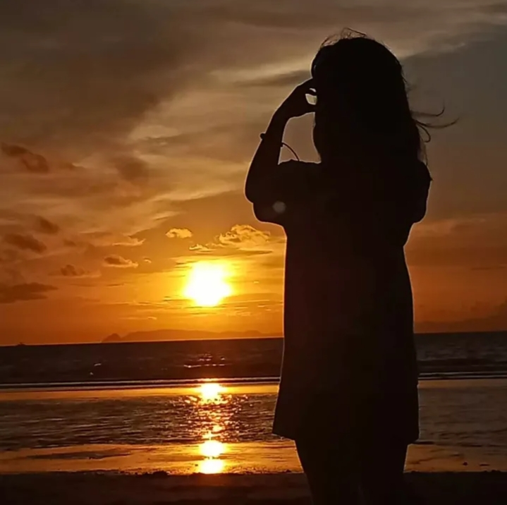

Photography, for me, is more than just capturing images.
It is my way of telling stories through emotions, colors,
and moments that often go unnoticed.
Through every photograph and video, I aim to preserve memories
and create visual stories that inspire people to appreciate
the beauty hidden in everyday life.
Every frame reflects passion, creativity, and a deep love for
life's little details.
